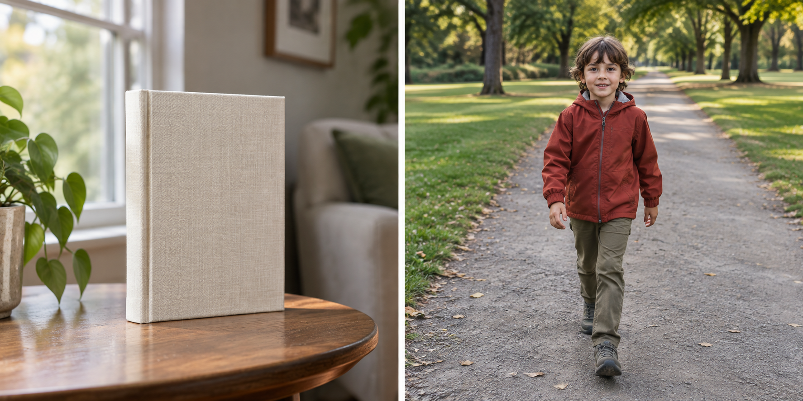

The shortest useful rule is this: choose single autofocus when the subject is expected to stay at the same distance, and choose continuous autofocus when the subject is expected to change distance during the shot. Camera brands use different names—AF-S and AF-C are common on Nikon systems, while other brands may use One Shot and Servo—but the underlying decision is about focus behavior, not the label.
Autofocus mode is only one part of a sharp photograph. The focus point still needs to land on a useful edge or detail, the shutter speed still needs to fit the movement, and the subject still needs enough contrast for the system to detect. The comparison below is designed to help you choose the first mode without promising that it will solve every focus failure.
The two behaviors
Single autofocus is designed for a subject that is stationary, or for a composition in which the subject will remain at the chosen focus distance. The camera acquires focus and generally holds that distance while you keep the focus command active or complete the capture. Nikon’s shooting materials describe the single-versus-continuous choice as a question of whether the subject stays still or keeps moving.
Continuous autofocus is designed to keep updating the focus distance while the camera expects the subject to move. The system may continue tracking or adjusting as the subject comes closer, moves farther away, or crosses the frame. The exact tracking behavior depends on the camera, lens, focus area, and selected subject-detection features.
The practical difference is not that one mode is “more accurate.” It is that the camera is being asked to make a different prediction about what happens next.
Quick decision matrix
| Situation | Better starting mode | Why | What to verify |
|---|---|---|---|
| A still life on a table | Single | The focus distance should not change | The intended edge or detail is sharp |
| A person standing still for a portrait | Single, unless the person is moving | You can place focus and recompose carefully | The nearer eye or chosen detail is sharp |
| A child walking toward the camera | Continuous | Distance changes during the sequence | Several frames keep the subject’s face or body readable |
| A cyclist crossing at a steady distance | Continuous or a zone-specific option | The subject is moving through the frame | The focus follows the intended subject, not the background |
| A scene with uncertain movement | Start with the mode that matches the likely motion, then test | The choice depends on what changes during capture | A short burst or repeated frame comparison |
Treat the table as a starting decision, not a guarantee. If a person is standing still but you keep changing your distance, continuous autofocus may still be reasonable. If a moving subject passes through a confusing background, continuous autofocus may need a smaller focus area or a different tracking setting.
When single autofocus is the better fit
Single autofocus is useful when you want to set the focus distance, check it, and then make the composition. Imagine a book on a desk. Place the focus point on the printed title or a clear edge, acquire focus, and recompose only if the subject and camera position make that safe. The important check is not the mode name; it is whether the chosen detail remains sharp in the final frame.
This mode also makes a deliberate focus-and-recompose workflow easier to understand. If the subject is close and the aperture is wide, a large recomposition can move the focus plane away from the intended detail. In that situation, place the focus point over the detail you want instead of relying on a large swing after focus is acquired.
Single autofocus can also be a useful diagnostic mode. If the subject is static and the image is still soft, you can inspect focus placement, shutter speed, lens cleanliness, and camera movement without adding subject tracking to the problem.
When continuous autofocus is the better fit
Continuous autofocus is useful when the subject’s distance changes before the exposure is complete. For a person walking toward the camera, the focus distance at the beginning of a sequence is not the same as the distance at the end. A mode that keeps updating has a better match to that changing task than one that holds the first focus distance.
Start with a subject that has a clear shape and a predictable path. Keep the focus area on the subject as consistently as the camera allows. Then inspect several frames rather than judging the whole sequence from one image. If the background becomes sharp while the subject is soft, the issue may be subject selection, focus-area choice, contrast, or timing—not simply the existence of continuous autofocus.
Continuous autofocus also has a cost: the camera is continually making decisions. In a cluttered scene, it may need more help from a smaller area, face or eye detection, or a different tracking option. Those controls are camera-specific, so use the current manual for their exact names and limits.
What neither mode can fix
Autofocus mode does not freeze movement. If the subject moves quickly and the shutter is too slow, the subject can be motion-blurred even when the focus distance is correct. Nikon’s exposure guidance treats shutter speed as the control that affects motion rendering; focus and motion are related but not interchangeable.
Autofocus also cannot focus through an obstruction that hides the subject’s useful detail, and it cannot guarantee a sharp result when the light is too low or the scene lacks contrast. A clean window, a plain wall, or a dark subject on a dark background can all make the focus task harder.
If a static subject is soft, check in this order: where the focus point landed, whether the shutter speed allowed camera movement, whether the lens or camera switched to the intended mode, and whether the scene provided a detectable edge. If a moving subject is soft, add timing, subject coverage, and shutter speed to the check.
A two-scene verification drill
Use the same camera and lens for two short tests.
Test one: stationary detail. Place a book or object on a table. Use single autofocus, choose one printed edge, and make three frames without moving the subject. Zoom in only enough to inspect the chosen detail. The result should show whether the mode can reliably acquire and hold the intended distance.
Test two: changing distance. Ask a person to walk slowly toward the camera along a clear path. Use continuous autofocus and keep the focus area on the face or upper body. Make a short sequence. Compare the early, middle, and late frames. You are looking for a pattern: does the subject remain readable as the distance changes, or does the focus shift to the background?
Repeat the moving test once with single autofocus if your camera allows it. The comparison is educational even if the final answer is obvious. It shows what “hold” and “update” mean on your equipment.
The decision in one sentence
Use single autofocus when you can place focus on a subject that will stay at that distance. Use continuous autofocus when the subject’s distance will change during the capture. Then verify the result with the actual detail you intended to keep sharp.
If the labels on your camera do not match these names, follow the manual’s description of whether the mode locks focus or continues adjusting. That behavior is more important than the abbreviation.
Research sources
Sources
- Nikon School: Shooting Action — Nikon USA
- Nikon D5100 User’s Manual — Nikon USA
- Photography for beginners: master the basics — Adobe
- A Basic Look at the Basics of Exposure — Nikon USA